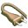

| Параметр |
Описание |
| DB_ENGINE |
Тип СУБД, используемой во время работы SAMS2. Возможные значения:
MySQL
PostgreSQL
unixODBC
|
| DB_SERVER |
Имя хоста или IP адрес, где находится СУБД. |
| SAMS_DB |
Имя базы данных, используемое для таблиц SAMS2. |
| ODBC |
Поставить 1 если DB_ENGINE=unixODBC и 0 в других случаях. |
| ODBCSOURCE |
Источник, как прописано в odbc.ini. Не используется если DB_ENGINE != unixODBC |
| DB_USER |
Имя пользователя, используемое для подключения к СУБД. |
| DB_PASSWORD |
Пароль (в открытом виде), используемый для подключения к СУБД. |
| SQUIDCACHEFILE |
Имя файла логов SQUID. Будет заменен на SQUIDCONF. |
| SQUIDROOTDIR |
Путь к директории, где лежит конфиг SQUID. Будет заменен на SQUIDCONF. |
| SQUIDLOGDIR |
Путь к директории, где лежит файл логов SQUID. Будет заменен на SQUIDCONF. |
| SQUIDCACHEDIR |
Путь к кэшу SQUID. Необходимо для работы функции восстановления файлов из кэша SQUID. Будет заменен на SQUIDCONF. |
| SQUIDCONF |
Полный путь к конфигурационному файлу SQUID. Еще не используется. |
| SQUID |
Полный путь к исполняемому файлу SQUID. Еще не используется. |
| SAMSPATH |
Путь, куда установлен SAMS. Не используется. |
| SQUIDPATH |
Путь к директории, где лежит исполняемый файл SQUID. Будет заменен на SQUID. |
| RECODECOMMAND |
Команда перекодирования имен пользователей. Если вы хотите использовать NTLM или AD авторизацию
и у вас есть имена пользователей на руссокм языке, измените этот параметр в соответствии с остальными
настройками кодировок.
|
| SHUTDOWNCOMMAND |
Команда, выполняемая при нажатии на кнопку  ("Shutdown proxy server") |
| CHECKPASSWDDB |
Проверять или нет наличие пользователя в системе, если используется автоматическое
создание пользователей.
0 или отсутствие параметра - не проверять
1 - проверять
|
| CACHENUM |
Число. Идентификатор прокси сервера. Для каждого прокси должен быть уникальным. |